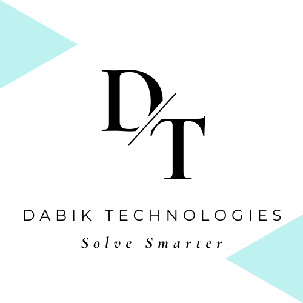

One hour a day. Real tasks, not passive videos. Tick each step as you finish it and your progress is saved on this device.
Send them this page. Basic computer skills are very learnable, and being ready to work on them already puts you ahead.